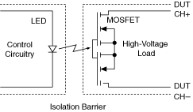

提交有关此主题的反馈。
提交有关此主题的反馈。 访问ni.com/support以获得技术支持。
访问ni.com/support以获得技术支持。固态继电器采用 LED 来控制光敏金属氧化物半导体场效应晶体管 (MOSFET) 的栅极。这种继电器结构在控制电路和负载之间提供了一个隔离屏障，允许继电器切换高压。LED 通电大约需要 1 ms（取决于继电器），LED 断电大约需要 0.5 ms。这些时间限制了该继电器的开关速度，但 SSR 比机电继电器快。
下图显示了一个典型的固态继电器的示意图。数字控制信号为打开和关闭 MOSFET 电路的 LED 供电。LED 需要将驱动电路与 DUT 信号隔离开来。

提交有关此主题的反馈。 访问ni.com/support以获得技术支持。